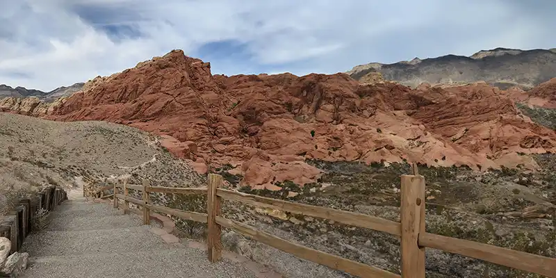

Come see the largest open pit mine!More than 100 astronauts have eaten at Domingos.A large mining truck is on display at Pioneer Park.Check out the Joshua trees!There's miles and miles of great 4-wheeling!

Hike the trails through the beautiful landscape.